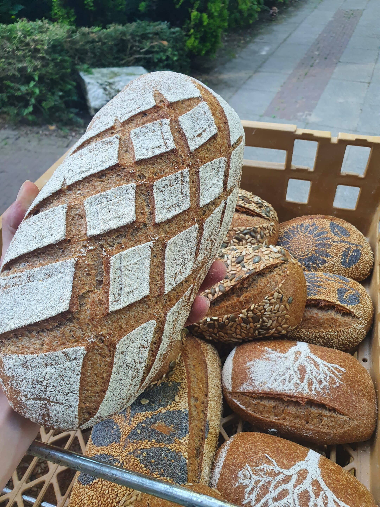

Bij BRodijnen draait alles om de eenvoud van het bakken. Simpel maar niet makkelijk.

Erik van Rodijnen
Oprichter & Bakker
Erik van Rodijnen, voormalig Kloosterbakker opgegroeid met de geur van versgebakken brood, heeft zijn vakmanschap herpakt in het oudste Kapucijnenklooster van Nederland. Erik combineert traditionele technieken met moderne inzichten om brood te creëren dat zowel authentiek als innovatief is.
Ingrediënten van hoge kwaliteit, bloem en meel gemalen zoals het hoort: In Molens. Het Klooster verlaten voor de grote stad: Nijmegen, en sinds 2025 ook in de buik van molen de Nijverheid in Ravenstein. Waar er een tweede passie weer opnieuw is gaan branden, koken.
Met een Oom als bakker, raakte Erik al vroeg besmet met het zogeheten Bakkers Virus. Met Vader en Moeder mee brood halen, wist hij al vroeg wat hij wilde.
School was niet zijn ding — hij wilde bakker worden. Een eerste snuffelstage bij de lokale bakker in Wijchen, niet veel later als vakantiewerk.
Op advies van zijn oom eerst gekozen voor de Horeca als kok. 7 jaar later keerde hij alsnog terug het bakkersvak in, bij zijn oom.
Na een persoonlijk turbulente tijd startte Erik in 2020 BRodijnen, op een terrasje in Alkmaar. Kwam bij het Kapucijnenklooster en startte BRodijnen in de voormalige bakkerij van de Kapucijnen.
"De kunst van koken is het weglaten"
Ontdek hoe ons desembrood tot stand komt
We gaan opzoek naar lokale molens, proberen meel en bloemsoorten uit. Na deze testfase maken we een keuze om zo ons beste brood te kunnen bakken.
Het deeg wordt langzaam gekneed, enkel in de mengstand, Fase 1, om de glutenstructuur rustig te laten ontwikkelen. Een massage in plaats van een bokswedstrijd.
Het dagelijks brood krijgt een lange rijstijd van ongeveer 18-24 uur, wat zorgt voor een rijke, diepe en unieke smaak en een lekkere structuur.